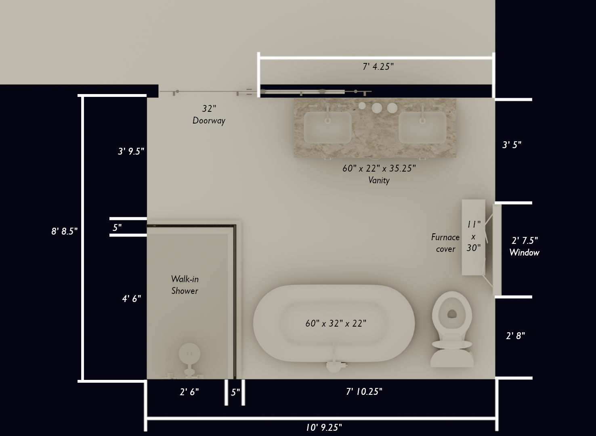

2D Plans
At Changing Form, I specialize in transforming your hand-drawn sketches, measurements, and photos into clean, professional 2D floor plans. Whether you're planning a renovation, arranging furniture, or preparing a real estate listing, these accurate digital layouts provide a clear and detailed representation of your space. Each plan is crafted to reflect your vision, ensuring functionality and clarity for your project needs.